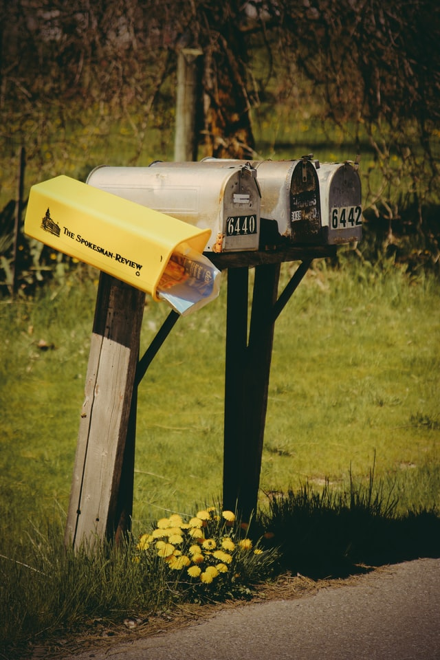
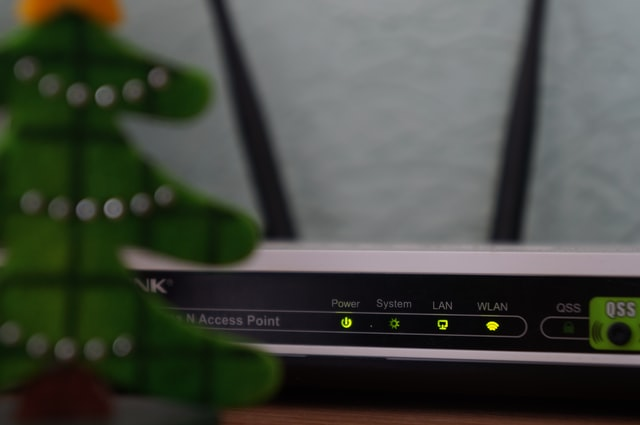

The IP address is a fascinating product of modern computer technology designed to allow one connected computer (or "smart" device) to communicate with another device over the Internet. IP addresses allow the location of literally billions of digital devices that are connected to the Internet to be pinpointed and differentiated from other devices.
So, what does an IP address tell you? It lets you know you are connected to the Internet. It's important because it follows rules of connectivity, so you don't need to think about it. The word protocol refers to a standard of guidelines, and that's a key part of the definition. The networking part of the Internet is defined by exact specifications (guidelines) for connecting on the Internet. The IP address you're using at any given time is your device's "digital address" that allows a connection to the systematically laid-out, interconnected grid that governs global connectivity. Every website (Disney, Amazon, Apple, etc.) has a unique IP address, but it goes by its name instead (Disney.com, Amazon.com, Apple.com.) But without IP addresses you couldn't connect with them and they couldn't share information with you.
An IPv4 address consists of four numbers, each of which contains one to three digits, with a single dot (.) separating each number or set of digits. Each of the four numbers can range from 0 to 255. Thanks to our IP addresses, we're pretty much guaranteed that our emails will come and go as expected, and that all our Google searches and website visits will work to perfection.
TWhereas IPv4 supports a maximum of approximately 4.3 billion unique IP addresses, IPv6 supports, in theory, a maximum number that will never run out. An IPv6 address consists of eight groups of four hexadecimal digits. If a group consists of four zeros, the notation can be shortened using a colon to replace the zeros. Network infrastructure devices such as servers, routers and firewalls are assigned permanent "static" IP addresses. The user's machines can also be assigned non-changing static IPs by a network administrator but most often are set to be automatically assigned (see DHCP). Internet service providers may periodically change the IPs in the modems of their home users, but business users must have consistent "static" IPs for servers that face the public.
TRouters got their name because they route IP Packets across networks: a router device connects different links. It examines IP packet headers, looking at the destination address and consulting a routing table of known networks. The table indicates which connections to send the packet on as the next link. The connections on a router are called interfaces: through the router, they interface between different link types. Often, routers learn how to reach distant networks by exchanging information with their neighbouring routers and building their own routing tables. This exchange of information to learn about other networks is called a routing protocol.